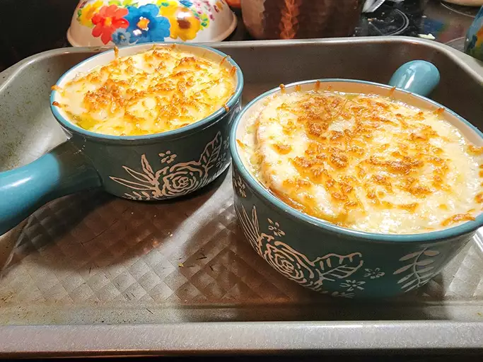

French Onion Soup

French onion soup is certainly of european origin more specifically French oui oui baguette. It is a warm comforting soup that is mostly made of soup as said in it's name. It is a very much french dish that is widely known around the world and is well recieived by others. The flavors complement each other very well and give a rich and comforting feeling for those that consume it.
The main star in this soup is the large amount of onions used. More specifically caramelized onions. When they are cooked for a long time they develop a brown color and a sweeter taste but at the cost of the size of the onions due to the water lost in the process. To make up for this large amounts of sliced onions are used to make sure there is a sufficient amount of onions that can be used ht esoup to provide a good amount of flavor while not sacrificing the amount that can be eaten.
The process in making these may take a while but it is very much rewarding because it its amazing flavor. Although it is named French onion soup it is very much far from being considered vegan because two of the other main compontents come from animals. However what isn't misleading is the wonderful taste of this onion soup recipe. This is a relatively simple recipe so it'll be hard to fail at making this. If you're a bignner this will be a wonderul introduction the the world of cooking.
Ingredients
- ½ cup unsalted butter
- 2 tablespoons olive oil
- 4 cups sliced onions
- 5 cups beef broth
- 2 tablespoons dry sherry
- 1 teaspoon dried thyme
- 1 pinch salt and pepper to taste
- 4 slices French bread
- 4 slices provolone cheese
- 2 slices Swiss cheese, diced
- ¼ cup grated Parmesan cheese
Instructions
- Gather all ingredients.
- Melt butter with olive oil in an 8-quart stock pot over medium heat. Add onions to butter and continually stir until tender and translucent. Do not brown the onions.
- Add beef broth, sherry, and thyme. Season with salt and pepper. Let simmer for 30 minutes.
- Meanwhile, preheat the oven's broiler.
- Ladle soup into oven-safe serving bowls and place one slice of bread on top of each (bread may be broken into pieces if you prefer). Layer each slice of bread with a slice of provolone, 1/2 slice diced Swiss and 1 tablespoon Parmesan cheese.
- Place bowls on a cookie sheet and broil in the preheated oven until cheese bubbles and browns slightly, 2 to 3 minutes.
- Serve hot and enjoy!